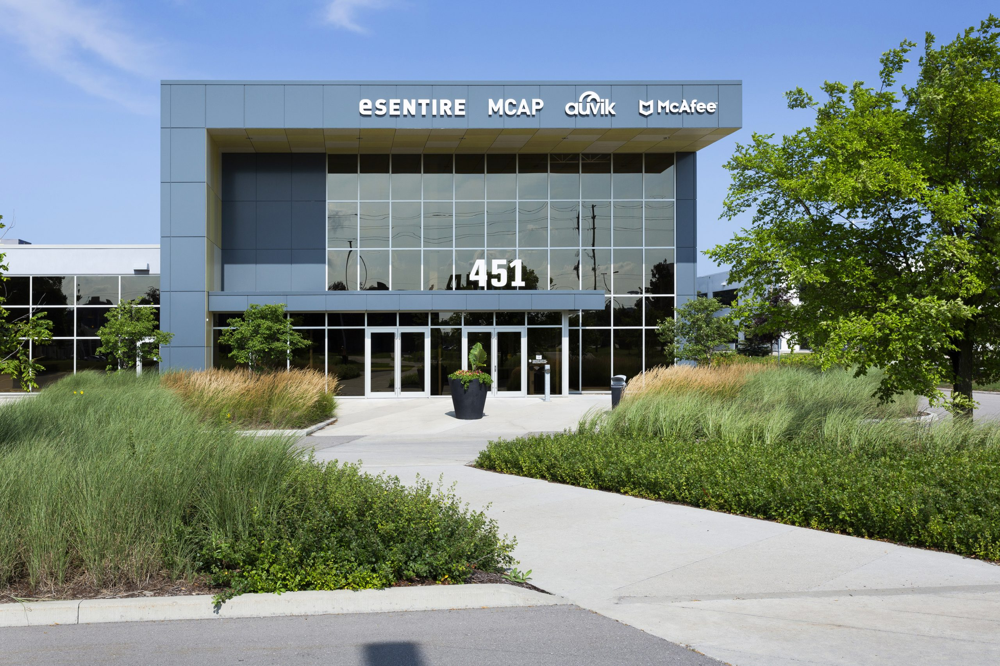

INTRODUCTION
Welcome to my Work Term Report. This page outlines my experience working at NCR as
a front-end software developer, from January 3, 2024 - May 1, 2024.
My name is Elman Islam, and I am a University of Guelph software engineering co-op student in my 4th year.
During this work term, I began learning about front end development and the process that goes behind building websites and user interfaces.
I also became more proficient with new tools, such as Jira and JReact.
I decided to work with this company because I wanted to immerse myself more into front-end development and have a more profound involvement in
designing components that real life people will be seeing everytime they open an application. I quickly began enjoying the work enviornment and the team
I was with during my time at NCR.
In this website page that I wrote, you can learn about my experience at the workplace, what my goals were, and the skills I gained. Use the navigation
bar above to read different topics. You can go to my main website and view other work term reports by clicking the logo in the top left.
ABOUT THE COMPANY

451 Phillip Street, Waterloo, Ontario, the office where I worked at
National Cash Register (NCR) is an American software, consulting and technology company providing several professional services and electronic products.
It manufactured self-service kiosks, point-of-sale terminals, automated teller machines, check processing systems, and barcode scanners. Established in 1884, NCR stands
as a pioneer in innovative technology solutions for businesses worldwide. From its origins in Dayton, Ohio, NCR has evolved into a global leader,
offering cutting-edge software, hardware, and services tailored to enhance efficiency and customer experiences across various industries.
With a rich history of innovation spanning over a century, NCR continues to redefine the landscape of commerce through its commitment to
technological advancement and customer-centric solutions. The company has recently split into two sister companies, NCR Voyix and NCR Atleos.
As a member of a front-end development team for one of the company's web banking technology tools,
my role was to develop user interface (UI) components, reproduce and fix defects, develop and review code with peers, and communicate my development progress and findings with my team.
GOALS
My first goal was to learn Typescript and React through various learning sources. The job focused primarily on designing and fixing several
react components that were used for front-end, but I had little experience with these tools prior to the job. After consistently spending my own time each day
studying and practicing the tools through a learning source the company provided for learning typescript called 'PluralSight', I eventually found myself adapting
to React Native. I noticed the improvement of my efficiency in detecting bugs in react code and understanding core coding principles in Typescript. Spending my own
time thoroughly studying a framework was clearly beneficial, and I hope to follow a similar process for future jobs that require frameworks I am not yet familiar with.
It is generally important for you to know a tool or language for a job, but I think it's even more important to be able to quickly adapt and learn the tool while on the job.
My second goal was improving the pace at which I solved defects and provided fixes for them, because at the level I was at during the beginning of the work term,
I kept requiring help from coworkers to help with my defects. My plan was to follow the general procedure below:
- Replicate the bug - First I have to make sure I can replicate the defect exactly as described in the ticket
- What are some possible causes of the bug? I have to brainstorm some possible reasons for why the bug is occuring. In other words, I have to diagnose the bug,
- What are some potential fixes or workarounds? I will start thinking of some ideas I could use to fix this bug. I have to consider how difficult these fixes will be to implement and if they could cause more bugs during implementation
- Execute the plan Here I will finally start coding the solution and eventually making a pull request (PR) for it.
- Aftermath Do I need to make tests for my new solution? Was it the most efficient fix? Could there be more bugs as a result of this fix?
I noticed that by recording the number of tickets I completed
over time, I eventually became efficient at debugging and creating fixes for defects at a quick pace; sometimes I have a PR ready just 30 minutes after reading
the defect ticket.
My third goal was simply note taking important information and progress in my notebook. This is also a practice I did in my last work term. I found that
having simple information about quick tutorials and commonly found defects helped me save time when I was working. The information is conveniently at the reach of my fingertips and helps
me remember steps for certain procedures. For example, there was one time I forgot how to locally run my website on my computer, but because I wrote steps on running the website locally in my notebook,
I saved myself some time and didn't need to ask a coworker.
JOB DESCRIPTION
Front-end Development
As front-end developer,
A front-end developer specializing in React Native and TypeScript typically works on developing mobile and web applications for various platforms.
My responsibilities included collaborating with designers and backend developers to implement user interfaces, integrating APIs, and ensuring
the application's responsiveness across different devices. I wrote clean, maintainable code using React Native components and TypeScript to
enhance code readability and scalability. Daily activities might involve writing and debugging code, optimizing performance, conducting code reviews,
and staying updated with the latest React Native and TypeScript developments to ensure the best practices are implemented in the projects I worked on.
The actual project I was working on was a banking website, where clients or businesses would send transactions and payments to different accounts. At
the beginning of my co-op, I would be given simple defect tickets on Jira, such as fixing an incorrect label for a button, making a box align properly with a sentence of text,
fix a broken button that does not redirect to the correct page, etc. As I progressed, I started handling new kinds of tickets called 'epics'; these are not just regular defects
but are actually components and new features that have been planned out, and usually contain subtickets. A subticket is a subtask for a parent ticket; for example, if an epic ticket
was for making a profile settings page, then a subticket or subtask could be viewing and changing the user's current email. A lot of what I learned in school takes part in designing the epic ticket.
It involves creating user stories and making flow paths that show how a user would navigate or interact with a component. This is important because developers should be much more than just code monkeys;
they should be able to understand what a component will be used for, how it will be interacted with, and what its limitations are, and none of these actually have anything to do with code. So for the
latter half of my work term, I brainstormed ideas by asking myself these questions when I was preparing to make a new ui component for a subtask for an epic ticket. I only started coding after
I had a thorough plan and understanding of what I needed to do.
One last part of my job that often gets underappreciated or looked over is test design. It is quite common for as much as 70% of a company's repository to be made
up of testing code. As someone who rigorously performed and worked with test cases in previous co-ops, I thoroughly understood the importance of creating useful test cases,
and so I often had to write my own unit tests for new components in epic tickets. When writing a unit test, you have to make sure that the code quality of what you are testing
is of high quality (no redundant lines, messy flowpoints, has clean naming conventions, etc.), and that the test thoroughly makes sure the component cannot break.
CONCLUSION
I think this is the co-op work term that I learned the most because it was the first time I had my hands on actually designing and writing code with react components, while
reusing testing skills I learned from previous work terms React Native and Typescript are new tools and frameworks I can add to my collection of resources under my belt. I have further
strengthened my debugging skills as well. As for non-technical abilities, I have learned a lot more about tickets and defects, as well as how to assign them and communicate your fixes with
your team. This is clearly a work term that has provided me a profound level of experience, and a company I would love to work at again.
ACKNOWLEDGEMENTS
As with every other one of my co-ops, my journey throughout this work term could not have been possible without the gracious help and assistance from various
teammates and coworkers. I would like to begin by thanking Irene He, a fellow co-op in the same team as me from the University of Waterloo.
A lot of our struggles and hardships were the same, and by sharing each other's knowledge and assisting each other I was able to learn the basics of the job much quicker.
I would also like to thank my coworkers Kevin, Jagruti and Ankita. Each of them were clearly professionals in front-end development and what took me hours at the start of my job
would take them mere minutes. Thanks to them I was able to become much more proficient at not just React but at being a better code developer in general, and I worked at a much more
efficient paste after learning from them. Finally, I would like to thank my supervisors Nandini and Malathi, who made sure to check up with me every once and a while. They
always made sure I was doing ok or asked if I needed any help or had any blockers. I'm glad I had the fortune of working with these kind developers and supervisors, and I hope I get to work with
similar teams in the future.